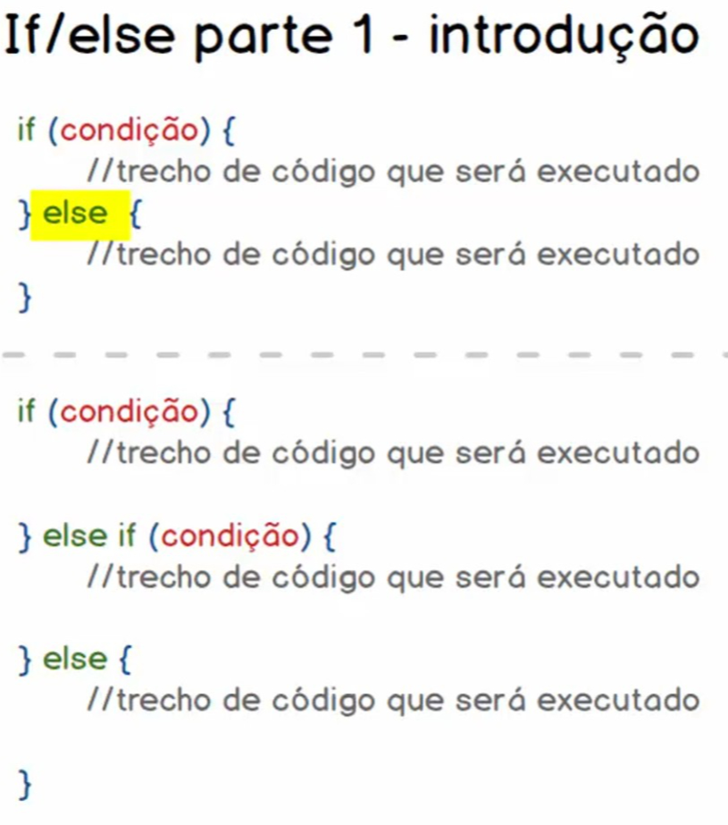
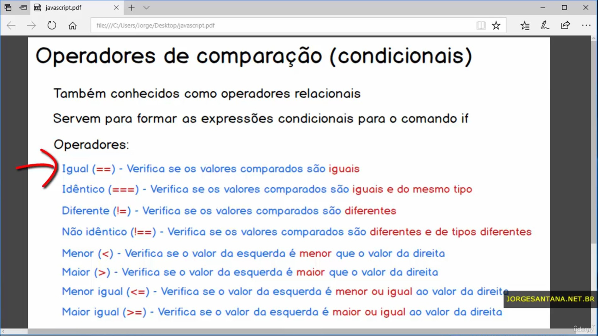
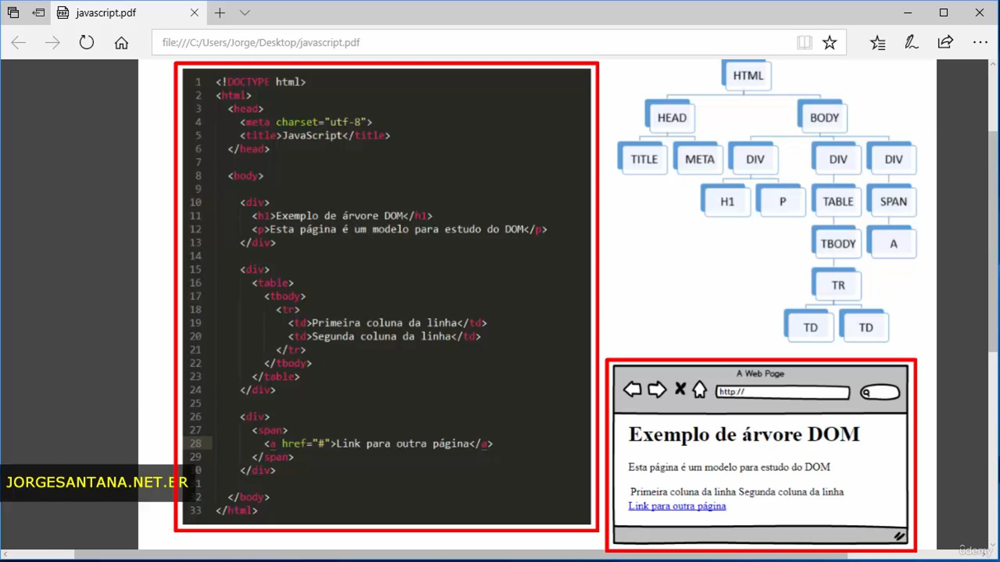

<!DOCTYPE html>
<html lang="pt-br">
  <head>
    <!-- Meta tags Obrigatórias -->
    <meta charset="utf-8">
    <meta name="viewport" content="width=device-width, initial-scale=1, shrink-to-fit=no">

    <!-- Bootstrap CSS -->
    <link rel="stylesheet" href="https://stackpath.bootstrapcdn.com/bootstrap/4.1.3/css/bootstrap.min.css" integrity="sha384-MCw98/SFnGE8fJT3GXwEOngsV7Zt27NXFoaoApmYm81iuXoPkFOJwJ8ERdknLPMO" crossorigin="anonymous">

    <!-- Font Awesome -->
      <link rel="stylesheet" href="https://cdnjs.cloudflare.com/ajax/libs/font-awesome/6.5.0/css/all.min.css">

    <!-- Estilo customizado -->
    <link rel="stylesheet" type="text/css" href="css/estilo.css">

    <script>
        // //160. Concatenação **********************************************************
        // var nome = prompt('Digite o seu nome: ') //Tudo q for digitado é transformado em string
        // var idade = prompt('Digite sua idade: ') //Tudo q for digitado é transformado em string
        // document.write('<h4>Olá ' + nome + ', tudo  bem? Sua idade é : ' + idade + '</h4>')     
        // document.write('<h4>Tipo da var nome: ' + typeof nome + '</h4>')
        
        // //162. Variáveis null e undefined **********************************************************
        // //Null
        // var nome = null
        // //Undefined
        // var idade
        // document.write('<h2>Tipo da var nome: ' + nome + '</h2>')       
        // document.write('<h2>Tipo da var idade: ' + idade + '</h2>')
        
        // // 163. Alterando valores de variáveis**********************************************************
        // //Undefined
        // var teste = 24
        // document.write('<h2 class="text-primary">Tipo da var teste: ' + typeof teste + '</h2>')       
        // var teste = "Júlio"
        // document.write('<h2 class="text-primary">Tipo da var teste: ' + typeof teste + '</h2>')   
        
        // //164. Revisão e desafio A-B-C **********************************************************
        // var a = 30
        // var b = 10
        // var c = null

        // document.write('<h2 class="text-primary">a = ' + a + ', b = ' + b + ', c = ' + c + '</h2>')

        // //Inverter valor de a com b
        // var c = a + b
        // var a = c - a
        // var b = c - a

        // document.write('<h2 class="text-primary">a = ' + a + ', b = ' + b + ', c = ' + c + '</h2>')
        // console.log(a, b, c)

        
        // // 167. Ifelse parte 2 - Praticando com operadores de comparação *************************************
        // var num1 = 7, num2 = 7
        // var texto = '7'

        // if (num1 !== num2) {
        //   document.write('<span class="text-primary">' + num1 + ' ' + typeof num1 + ' !==' + num2 + ' ' + typeof num2 + '</span><span class="text-success ml-3">(VERDADE)</span>')
        // } else {
        //   document.write('<span class="text-primary">' + num1 + ' ' + typeof num1 + ' !==' + num2 + ' ' + typeof num2 + '</span><span class="text-danger ml-3">(FALSO)</span>')
        // }

        // if (num1 <= texto) {
        //   document.write('<br><span class="text-primary">' + num1 + ' ' + typeof num1 + ' <=' + texto + ' ' + typeof texto + '</span><span class="text-success ml-3">(VERDADE)</span>')
        // } else {
        //   document.write('<span class="text-primary">' + num1 + ' ' + typeof num1 + ' <=' + texto + ' ' + typeof texto + '</span><span class="text-danger ml-3">(FALSO)</span>')
        // }


        // // 169. Casting de tipos com toString(), parseInt() e parseFloat()*****************************************
        // var variavel1 = '10.30', variavel2 = '20.30'

        // document.write('<div class="text-primary">' + variavel1 + variavel2 + '</div>')
        // document.write('<div class="text-primary">' + (variavel1 + variavel2) + '</div>')

        // variavel1 = parseInt(variavel1)
        // variavel2 = parseFloat(variavel2)

        // document.write('<div class="text-primary">' + variavel1 + variavel2 + '</div>')
        // document.write('<div class="text-primary">' + (variavel1 + variavel2) + '</div>')

        // variavel1 = variavel1.toString()
        // variavel2 = variavel2.toString()
        
        // document.write('<div class="text-primary">' + variavel1 + variavel2 + '</div>')
        // document.write('<div class="text-primary">' + (variavel1 + variavel2) + '</div>')

        // // 172. Operador ternário
        // var nota = prompt('Digite uma nota: ') 
        // var faltas = prompt('Digite a quantidade de vezes q vc faltou: ')

        // var media = 7
        // var faltas_maximas = 15

        // var resultado = (nota >= media && faltas <= faltas_maximas) ? 'Aprovado' : 'Reprovado' 
        // document.write('<div class="text-primary">' + resultado + '</div>')
        
    
        // // 173. Atividades para fixação do conteúdo *****************************************
        // var idade = prompt('Digite sua idade: ')

        // if (idade >= 0 && idade < 15) {
        //     document.write('<div class="text-primary">Criança</div>')
        //     alert('Criança')
        // } else if (idade >= 15 && idade < 30) {
        //     document.write('<div class="text-primary">Jovem</div>')
        // } else if (idade >= 30 && idade < 60) {
        //     document.write('<div class="text-primary">Adulto</div>')
        // } else if (idade >= 60 && idade < 200) {
        //     document.write('<div class="text-primary">Idoso</div>')
        // } else {
        //     document.write('<div class="text-danger">Não nasceu ou está mortinho já</div>')
        // }


        // // 175. Switch na prática *****************************************

        // var parametro = 2

        // switch (parametro) {
        //     case 1:
        //         document.write('<div class="text-danger">Parametro 1</div>')
        //         break
        //     case 2:
        //         document.write('<div class="text-danger">Parametro 2</div>')
        //     case 3:
        //         document.write('<div class="text-danger">Parametro 3</div>')
        //         break
        //     default:
        //         document.write('<div class="text-danger">Defalt</div>')
        // }


        // // 177. Praticando com operadores aritméticos *****************************************
        // var num1 = prompt('Digite o valor de num1')
        // var num2 = prompt('Digite o valor de num2')

        // num1 = parseInt(num1)
        // num2 = parseInt(num2)

        // document.write('A soma entre ' + num1 + ' e ' + num2 + ' é: ' + (num1 + num2) + '<br />')
        // document.write('A subtração entre ' + num1 + ' e ' + num2 + ' é: ' + (num1 - num2) + '<br />')
        // document.write('A multiplicação entre ' + num1 + ' e ' + num2 + ' é: ' + (num1 * num2) + '<br />')
        // document.write('A divisão entre ' + num1 + ' e ' + num2 + ' é: ' + (num1 / num2) + '<br />')
        // document.write('O módulo entre ' + num1 + ' e ' + num2 + ' é: ' + (num1 % num2) + '<br />')
        // document.write('O incremento de ++num1 ' + num1 + ' é: ' + (++num1) + '<br />')
        // document.write('O incremento de num1++ ' + num1 + ' é: ' + (num1++) + '<br />')
        // document.write(num1 + '<br />')
        // document.write('O decremento de ++num1 ' + num1 + ' é: ' + (--num1) + '<br />')
        // document.write('O decremento de num1++ ' + num1 + ' é: ' + (num1--) + '<br />')
        // document.write(num1)
        // document.write('A exponenciação de num1 a 2 ' + num1 + '² = ' + (num1**2) + '<br />')        
        // document.write('A exponenciação de num1 a 2 ' + num1 + '² = ' + (num1**=2) + '<br />')


        // // 178. Operações aritméticas na atribuição de valores *****************************************
        // var teste = 10

        // teste += 5
        // document.write('<h2 class="text-primary">a = ' + (teste) + '</h2>')
        // teste -= 5
        // document.write('<h2 class="text-primary">a = ' + (teste) + '</h2>')
        // teste *= 5
        // document.write('<h2 class="text-primary">a = ' + (teste) + '</h2>')
        // teste /= 5
        // document.write('<h2 class="text-primary">a = ' + (teste) + '</h2>')
        // teste %= 5
        // document.write('<h2 class="text-primary">a = ' + (teste) + '</h2>')

        // teste = 'Olá, '
        // teste += 'Júlio'
        // c
        

        // // 179. Precedência de execução das operações aritméticas *****************************************
        // var precedencia = (11 + 5 - 5 * 2 % 3 / 2)
        // // (11 + 5 - (5 * 2) % 3 / 2)
        // // (11 + 5 - (10 % 3) / 2)
        // // (11 + 5 - (1 / 2))
        // // ((11 + 5) - 0.5)
        // // (16 - 0.5)
        // // (15.5)

        // document.write('<h2 class="text-primary">a = ' + (precedencia) + '</h2>')
        
        // precedencia **= 2
        // document.write('<h2 class="text-primary">a = ' + (precedencia) + '</h2>')

        // // ODEM DE PRECEDÊNCIA
        // // ()   → Parênteses
        // // **   → Exponenciação
        // // *, /, % → Multiplicação, divisão e resto
        // // +, - → Soma e subtração
        // // <, >, <=, >= → Comparações
        // // ==, !=, ===, !== → Igualdade
        // // && → E lógico
        // // || → OU lógico
        // // = → Atribuição

        
        // // 180. Atividades para fixação do conteúdo*****************************************
        // // var nome = prompt('Digite seu nome: ')
        // // var altura = prompt('Digite sua altura em cm: ')
        // // var peso = prompt('Digite seu peso em Kg: ')

        // var nome = 'Julio'
        // var altura = '168'
        // var peso = '58'

        // altura = parseFloat(altura / 100)
        // peso = parseFloat(peso)

        // var imc = (peso / altura**2)

        // if (imc < 16) {
        //     document.write('<h2 class="text-danger">' + nome + ' possui índice de imc corporal igual a ' + (imc) + ', sendo classificado como: Peso, muito grave!</h2>')
        // } else if (imc < 18.5) {
        //     document.write('<h2 class="text-danger">' + nome + ' possui índice de imc corporal igual a ' + (imc) + ', sendo classificado como: Peso, grave!<</h2>')
        // } else if (imc < 18.5) {
        //     document.write('<h2 class="text-warning">' + nome + ' possui índice de imc corporal igual a ' + (imc) + ', sendo classificado como: Baixo peso!</h2>')
        // } else if (imc < 25) {
        //     document.write('<h2 class="text-success">' + nome + ' possui índice de imc corporal igual a ' + (imc) + ', sendo classificado como: Peso normal!</h2>')
        // } else if (imc < 30) {
        //     document.write('<h2 class="text-warning">' + nome + ' possui índice de imc corporal igual a ' + (imc) + ', sendo classificado como: Sobrepeso!</h2>')
        // } else if (imc < 35) {
        //     document.write('<h2 class="text-danger">' + nome + ' possui índice de imc corporal igual a ' + (imc) + ', sendo classificado como: Obesidade grau I!</h2>')
        // } else if (imc < 40) {
        //     document.write('<h2 class="text-danger">' + nome + ' possui índice de imc corporal igual a ' + (imc) + ', sendo classificado como: Obesidade grau II!</h2>')
        // } else if (imc > 40) {
        //     document.write('<h2 class="text-danger">' + nome + ' possui índice de imc corporal igual a ' + (imc) + ', sendo classificado como: Obesidade grau III!</h2>')
        // } else {
        //     document.write('<h2 class="text-danger">' + nome + ' possui índice de imc corporal igual a ' + (imc) + ', sendo classificado como: Mortinho!</h2>')
        // }


        // // 182. Funções - Prática *************************************

        // var largura = 10
        // var comprimento = 10

        // function calcularAreaTerreno( largura, comprimento ) {
        //     var area = largura * comprimento

        //     return area
        // }

        // var area = calcularAreaTerreno( largura, comprimento )
        // document.write('<h2 class="text-danger">O terreno possui ' + area + ' metros quadrados!</h2>')


        // 183. Funções - Flexibilidade de parâmetros *************************************
        // function soma ( a, b ) {
        //     // b = b === undefined ? 0 : b            
        //     return a + b
        // }

        // document.write('<h2 class="text-danger">soma = ' + soma(10, 5) + '</h2>')
        // document.write('<h2 class="text-danger">soma = ' + soma(10, 5, 10, 15) + '</h2>') // Desconsidera o restante das variaveis
        // document.write('<h2 class="text-danger">soma = ' + soma(10) + '</h2>') // A segnda tem o valor de undefined (10 + undefined) = not a number(NaN)
        // document.write('<h2 class="text-danger">soma = ' + soma() + '</h2>') // As duas tem o valor de undefined (undefined + undefined) = Not a Number(NaN)


        // // 184. Escopo de variáveis *************************************
        // // 3 escopos: global, função e bloco

        // var serie = 'friends'

        // if (true) {
        //     var serie2 = ' Game of Thrones'  // Sobe para o escopo Global     
        //     document.write(serie)
        //     document.write(serie2)
        //     // document.write(serie3)
        // }

        // document.write('<br>')

        // function x() {
        //     var serie3 = ' The Walking Dead' // Não é vista no escopo global e de bloco, somente no de função 
        //     document.write(serie)
        //     document.write(serie2)
        //     document.write(serie3)
        // }
        // x()
        
        // document.write('<br>')
        
        // document.write(serie)
        // document.write(serie2)
        // document.write(serie3)


        // // 185. Funções anônimas e a técnica de wrapper *************************************
        // var exibirSaldacao = function(nome) {
        //     document.write('Olá ' + nome + ', tudo bem?')
        // }

        // exibirSaldacao('Júlio')


        // // 186. Funções de callback *************************************
        // function exibirArtigo(id, callbackSucesso, callbackErro) {
        //     // logica: recuperar artigo via requisição http
        //     if (true) {
        //         callbackSucesso('Função de callback em JS', 'Função de callback de sucesso!')
        //     } else {
        //         callbackErro('Erro ao carregar arquivo')
        //     }
        // }

        // var callbackSucesso = function(titulo, descricao) {
        //     document.write('<h2 class="text-success">' + titulo + '</h2>')
        //     document.write('<br>')
        //     document.write('<h2 class="text-success">' + descricao + '</h2>')
        // }

        // var callbackErro = function(erro) {
        //     document.write('<h2 class="text-danger">' + erro + '</h2>')
        // }

        // exibirArtigo(10,callbackSucesso,callbackErro)


        // // 187. Funções nativas para manipular strings *************************************
        // // Propriedades: 
        // document.write('Júlio'.length) //quantidade de caracteres de uma string
        // document.write('<br>')
        // document.write('Júlio'.charAt(1)) //caractere contido nessa poosição
        // document.write('<br>')
        
        // var nome = 'Mam Ada'
        // document.write(nome.indexOf('a')) //posição da primeira ocorrência desse caractere        
        // document.write('<br>')
        // document.write(nome.indexOf('i')) //caso não exitir, retorna -1        
        // document.write('<br>')
        // document.write(nome.replace('ada', 'jaca')) //subsitui uma cadêia de caracteres por outra
        // document.write('<br>')
        // document.write(nome.substr(4, 6)) //pega uma cadeia de caracteres de uma posição inicial até uma final
        // document.write('<br>')
        // document.write(nome.toLowerCase()) //deixa tudo minúsculo
        // document.write('<br>')
        // document.write(nome.toUpperCase()) //deixa tudo maiúsculo
        // document.write('<br>')
        // var nome = ' Mam Ada '
        // document.write('-' + nome + '-')
        // document.write('<br>')
        // document.write('-' + nome.trim() + '-') //remove espaço das extremidadades


        // // 188. Funções nativas para tarefas matemáticas *************************************
        // var x = 10.380
        // document.write(Math.ceil(x)) //arredonda para cima em um valor inteiro
        // document.write('<br>') 
        // document.write(Math.floor(x)) //arredonda para baixo em um valor inteiro
        // document.write('<br>') 
        // document.write(Math.round(x)) //arredonda para baixo ou para cima dependendo da fração
        // document.write('<br>') 
        // document.write(Math.random()) //arredonda para baixo ou para cima dependendo da fração


        // // 189. Funções nativas para manipular datas *************************************
        // var data = new Date()
            
        // document.write(data.getDate() + '/' + (data.getMonth() + 1) + '/' + (data.getFullYear()))


        // // 190. Praticando um pouco mais com datas *************************************
        // var data = new Date()

        // document.write(data.toString())
        // document.write('<br>')
        // data.setDate(data.getDate() + 1)
        // document.write(data.toString())
        // document.write('<br><br>')
        
        // data.setMonth(data.getMonth() + 1)
        // document.write(data.toString())
        // document.write('<br><br>')

        // data.setFullYear(data.getFullYear() + 1)
        // document.write(data.toString())
        // document.write('<br><br><hr>')

        // //15/01/2025
        // var data1 = new Date(2017, 0, 15)
        // //20/02/2025
        // var data2 = new Date(2017, 1, 23)

        // document.write(data1.toString())
        // document.write('<br>')
        // document.write(data2.toString())
        
        // document.write('<br><br><hr>')
        // document.write(data1.getTime()) //data dês de 1970 ate essa data1 em ms
        // document.write('<br><hr>')
        // document.write(data2.getTime()) //data dês de 1970 ate essa data2 em ms
        
        // document.write('<br><hr>')
        // var tempo_entre_datas = (data1.getTime() - data2.getTime()) //diferença em ms de uma data para outra e o Math.abs para ficar positivo(valor absoluto)
        // var tempo_ms_de_um_dia = (24*60*60*1000)
        // document.write(tempo_entre_datas)

        // document.write('Diferênça entre data1 e data2 = ' + Math.ceil(Math.abs(tempo_entre_datas / tempo_ms_de_um_dia)))


        // // 191. Atividades para fixação do conteúdo *************************************
        // var a = '2'
        // var op = 'soma'
        // var b = '3'

        // var resultado = function(num1, num2, operacao) {
        //     if (operacao === 'subtração') {
        //         return parseFloat(num1) - parseFloat(num2)
        //     } else if (operacao === 'soma') {
        //         return parseFloat(num1) + parseFloat(num2)
        //     }
        // }

        // document.write('O resultado é: ' + resultado(a, b, op))
        
        
        // // 193. Eventos parte 2 - Mouse *************************************
        // function acao() {
        //     alert('Evento disparado!')
        // }

        // function acao2() {
        //     alert('O cursor do mouse deixou a região do elemento!')
        // }


        // // 194. Eventos parte 3 - Teclado *************************************
        // function acao() {
        //     alert('Evento disparado!')
        // }


        // 195. Eventos parte 4 - Janela  *************************************


        // 196. Eventos parte 5 - Formulários *************************************


        // 197. DOM parte 1 - Introdução *************************************


        // 198. DOM parte 2 - Selecionando elementos da página *************************************
        // console.log(document.getElementById('nome_usuario')) não vai encontrar o id pois ele n foi criado ainda


        // // 199. DOM parte 3 - Manipulando valores de inputs (text) *************************************
        // function distribuirCaractere() {
        //     // Selecionar valor digitado
        //     var caractere = document.getElementById('entrada').value
        //     // Limpar o campo de digitação
        //     document.getElementById('entrada').value = ''

        //     // limpara espaços em branco nas extremidades
        //     caractere.trim()

        //     switch(caractere) {
        //         case '0':
        //         case '1':
        //         case '2':
        //         case '3':
        //         case '4':
        //         case '5':
        //         case '6':
        //         case '7':
        //         case '8':
        //         case '9':
        //         // Adicionar o caractere campo referente a números
        //         document.getElementById('apenas_numeros').value = caractere
        //         break
        //         default: 
        //         // adicionar o caractere no campo referente a letras
        //         document.getElementById('apenas_letras').value += caractere
        //     }

        // }


        // // 200. DOM parte 4 - Manipulando estilos de elementos*************************************
        // function modificaEstilo(corDeFundo, mg) {
        //     document.getElementById('quadrado').style.background = corDeFundo
        //     document.getElementById('quadrado').style.margin = mg
        //     document.getElementById('quadrado').textContent  = 'OLÁ JÚLIO'
        //     // document.getElementById('quadrado').className = 'mt-1'
        // }


        // // 201. DOM parte 5 - Manipulando classes de*************************************
        //     var i = 1

        //     function modificaClasse() {
        //         if ((i % 2) === 1) {
        //             document.getElementById('mensagem').className = 'estilo2'
        //             i++
        //             console.log(i)
        //         } else {
        //             document.getElementById('mensagem').className = 'estilo1'
        //             i--
        //             console.log(i)
        //         }
        //     }
        // <script>

        // <style>
        //     .estilo1 {
        //         background: #FF0000;
        //         color: #FFF;
        //     }    
        //     .estilo2 {
        //         width: 400px;
        //         height: 90px;
        //         background-color: #FF0000;
        //         text-align: center;
        //         font-size: 25px;
        //         color: #FFF;
        //         padding: 25px;
        //     }    
        // </style>


        // // 202. Atividades para fixação do conteúdo ************************************* 
        // function mudarFundo() {
        //     document.getElementById('tarefa').style.background = 'yellow'
        // }
        // function mudarFundo2() {
        //     qtdChar = document.getElementById('tarefa').value.length
        //     console.log(qtdChar)
        //     if (qtdChar < 3) {
        //         document.getElementById('tarefa').style.background = 'red'
        //     } else if (qtdChar >= 3) {
        //         document.getElementById('tarefa').style.background = 'green'
        //     }
        // }


        // 205. Array básico - Introdução *************************************


        // // 206. Array básico - Prática  *************************************
        // // var array_nome = Array()
        // var array_nome = []

        // array_nome[1] = 'Julio'
        // array_nome[2] = 'Cesar'
        // array_nome['x'] = true
        // array_nome[4] = 10
  
        // console.log(array_nome)

        // // var teste = Array('Julio', 'Cesar', true, 10)
        // var teste = ['Julio', 'Cesar', true, 10]
        // console.log(teste[0])
        // console.log(teste[1])
        // console.log(teste[2])
        // console.log(teste[3])

        // var var1 = []
        // var1['x'] = 2
        // var1[1] = 2
        // console.log(var1) // length = 2


        // // 208. Array multidimensional  *************************************
        // var listaDeCoisas = []
        // listaDeCoisas['frutas'] = []
        // listaDeCoisas['pessoas'] = []
        
        // listaDeCoisas['frutas'][1] = 'caçã'
        // listaDeCoisas['frutas'][2] = 'goiaba'
        // listaDeCoisas['frutas'][3] = 'banana'
        // listaDeCoisas['frutas'][4] = 'mamão'
        
        // listaDeCoisas['pessoas'][1] = 'Júlio'
        // listaDeCoisas['pessoas'][2] = 'César'
        // listaDeCoisas['pessoas'][3] = 'Xavier'
        // listaDeCoisas['pessoas'][4] = 'Dutra'

        // console.log(listaDeCoisas)
        // document.write(listaDeCoisas['frutas'][2])


        // // 209. Array - Métodos de inclusão e exclusão de elementos *************************************
        // var listaFrutas = []
        // listaFrutas[0] = 'Banana'
        // listaFrutas[1] = 'Maçã'

        // listaFrutas.push('Uva') // Incluir no começo do array
        // console.log(listaFrutas)

        // listaFrutas.unshift('rola') // Incluir no final do array
        // console.log(listaFrutas)

        // var listaNomes = []
        // listaNomes[0] = 'Júlio'
        // listaNomes[1] = 'César'
        // listaNomes[2] = 'Xavier'
        // listaNomes[3] = 'Dutra'

        // listaNomes.shift() // Excluir no começo do array
        // console.log(listaNomes)

        // listaNomes.pop() // Excluir no final do array
        // console.log(listaNomes)
        
        // listaNomes['Teste'] = []
        // listaNomes['Teste'].unshift('NUM1')

        // console.log(listaNomes)


        // // 210. Array - Método de pesquisa *************************************
        // var listaNomes = []
        // listaNomes[0] = 'Júlio'
        // listaNomes[1] = 'César'
        // listaNomes[2] = 'Xavier'
        // listaNomes[3] = 'Dutra'
        // listaNomes['teste'] = []

        // listaNomes['teste'][0] = 'NUM1'

        // console.log(listaNomes['teste'].indexOf('NUM1')) //Fala a posição daquele elemento

        // if (listaNomes['teste'].indexOf('NUM1') === -1) {
        //     console.log('Elemento não existe')
        // } else {
        //     console.log('Elemento Existe na posição ' + listaNomes['teste'].indexOf('NUM1'))
        // }


        // 211. Array - Ordenação de elementos*************************************
        var listaNome = ['Douglas', 'César', 'Baitola', 'Amanda']
        
        console.log(listaNome.sort()) // ordena em ordem alfabética

        var listaNumeros = [10, 2, 30]

        console.log(listaNumeros.sort(ordenaNumeros))  //o método sort do JavaScript vai chamar a sua função de comparação (ordenaNumeros) várias vezes, passando dois valores do array por vez (o a e o b).

        function ordenaNumeros(a, b) {
            return a - b
        }

    </script>
        <title>211. Array - Ordenação de elementos</title>
  </head>
  <body>
    <div>

        <!-- 167. Ifelse parte 2 - Praticando com operadores de comparação *************************************
        <div class="mt-5">
          
          
        </div> -->
        
    
        <!-- 173. Atividades para fixação do *************************************
        <div>
            <h5>
                1. Crie uma aplicação capaz de identificar a faixa etária com base na idade informada pelo usuário. Considere os seguintes critérios:
            </h5> 
            <ul>
                <li>Se a idade informada for maior ou igual a 0 e menor que 15, exibir a mensagem “Criança”.</li>
                <li>Se a idade informada for maior ou igual a 15 e menor que 30, exibir a mensagem “Jovem”.</li>
                <li>Se a idade informada for maior ou igual a 30 e menor que 60, exibir a mensagem “Adulto”.</li>
                <li>Se a idade informada for maior ou igual a 60, exibir a mensagem “Idoso”.</li>
                <li>Fique à vontade para utilizar qualquer uma das funções aprendidas para exibição de dados para o usuário.</li>
            </ul> 
        </div> -->
    
        
        <!-- 180. Atividades para fixação do conteúdo *************************************
        <div>
            
        </div> -->
        
        
        <!-- 182. Funções - Prática ************************************* -->
        <!-- <div>
            
        </div> -->
    
    
        <!-- 193. Eventos parte 2 - Mouse  *************************************-->
        <!-- <div onclick="acao()" style="background: #ccc; height: 150px; width: 150px;">
            onclick(Clique 1 vez)
        </div> 
        <br>
        <div ondblclick="acao()" style="background: #ccc; height: 150px; width: 150px;">
            ondblclick(Clique 2 vezes)
        </div> 
        <br>
        <div onmouseup="acao()" style="background: #ccc; height: 150px; width: 150px;">
            onmouseup(segure e dps solte)
        </div> 
        <br>
        <div onmouseover="acao()" style="background: #ccc; height: 150px; width: 150px;">
            onmouseover(mouse dentro da div)
        </div> 
        <br>
        <div onmouseout="acao()" style="background: #ccc; height: 150px; width: 150px;">
            onmouseout(quando o mouse sai da div)
        </div> -->
    
        <!-- Testando com mais de um evento -->
        <!-- <br>
        <div onclick="acao()" onmouseout="acao2()" style="background: red; height: 150px; width: 150px;">
            onmouseout(quando o mouse sai da div)
        </div>  -->
    
    
        <!-- 194. Eventos parte 3 - Teclado  ************************************* -->
    
        <!--quando a tecla é precionada-->
        <!-- <input onkeydown="acao()" type="text">  -->
    
        <!--enquanto a tecla de um caractere está precionada, n pode ser ENTRER, TAB...-->
        <!-- <input onkeypress="acao()" type="text">  -->
    
        <!--quando a tecla for desprecionada -->
        <!-- <input onkeyup="acao()" type="text">  -->
    
    
        <!-- 195. Eventos parte 4 - Janela ************************************* -->
        <!-- <body onresize="console.log('Evento disparado ao mudar o tamanho da janala do body')"> -->
        <!-- <div style="height: 3000px; width: 125px; background: #ccc;"></div>
        <body onscroll="console.log('Evento disparado ao rolar no scroll nessa div')">tete</div> -->
    
    
        <!-- 196. Eventos parte 5 - Formulários -->
        <!-- <input onfocus="console.log('Você aplicou o foco!')" onblur="console.log('Perdeu o foco!')" type="text">
    
        <select onchange="console.log('o Estádo foi modificado!')">
            <option >-- Selecione --</option>
            <option value="1">Primeira opção</option>
            <option value="2">Segunda opção</option>
        </select> -->
    
    
        <!-- 197. DOM parte 1 - Introdução -->
        <!--  -->
    
    
        <!-- 198. DOM parte 2 - Selecionando elementos da página  ************************************* -->
        <!-- <input 
            type="text"
            placeholder="Digite seu nome"
            id="nome_usuario"
            class="campo_texto"
            name="nome"
        >
        
        <script>
            // 198. DOM parte 2 - Selecionando elementos da página *************************************
            console.log(document.getElementById('nome_usuario'))        // Seleciona UM elemento pelo ID (único na página).
            console.log(document.getElementsByTagName('input'))         // Retorna todos os elementos <input> da página em uma coleção HTML.
            console.log(document.getElementsByClassName('campo_texto')) // Retorna todos os elementos que possuem a classe "campo_texto".
            console.log(document.getElementsByName('nome'))             // Retorna todos os elementos que possuem o atributo name="nome".
        </script> -->
    
    
        <!-- 199. DOM parte 3 - Manipulando valores de inputs (text) *************************************-->
        <!-- <input 
            type="text"
            placeholder="Digite um caractere aqui"
            onkeyup="distribuirCaractere()"
            id="entrada"
        />
        
        <hr>
        <span>Letras</span>
    
        <input 
            type="text" 
            disabled="disabled" 
            id="apenas_letras"
        >
        
        <span>Números</span>
        
        <input 
            type="text" 
            disabled="disabled" 
            id="apenas_numeros"
        > -->
    
    
        <!-- 200. DOM parte 4 - Manipulando estilos de elementos ************************************* -->
        <!-- <h3>Manipulando Estilo</h3>
    
        <button  onclick="modificaEstilo('#FF0000', '50px')" class="bg-danger" type="button">Vermelho</button>
        <button  onclick="modificaEstilo('#00FF00', '100px')" class="bg-success" type="button">Verde</button>
        <button  onclick="modificaEstilo('#0000FF', '200px')" class="bg-primary" type="button">Azul</button>
    
        <div class="mt-5" style="border: 10px solid #000; width: 200px; height: 200px;" id="quadrado">
            OLÁ
        </div> -->
    
    
        <!-- 201. DOM parte 5 - Manipulando classes de ************************************* -->
        <!-- <div id="mensagem" class="estilo1">
            Modificando classe
        </div>
        <hr>
        <button onclick="modificaClasse()" type="button">Aoplicar classe</button> -->


        <!-- 202. Atividades para fixação do conteúdo *************************************-->
         <!-- <div>
             <h2>1- Crie um campo -input type="text"- e aplique os seguintes controles com base nos eventos abaixo:</h2>
             <ul>
                <li>
                    No evento de foco modifique o background do input para amarelo.
                </li>
                <li>
                    Quando o campo perder o foco, recupere o seu respectivo valor e:
                </li>
                <li>
                    Caso o conteúdo contido no campo tenha menos de 3 caracteres o mesmo
                    deve ter seu background alterado para vermelho.
                    o Caso o conteúdo contido no camp
                </li>
             </ul>
         </div>
        <input id="tarefa" onfocus="mudarFundo()" onblur="mudarFundo2()" type="text">
    
        <select onchange="console.log('o Estádo foi modificado!')">
            <option >-- Selecione --</option>
            <option value="1">Primeira opção</option>
            <option value="2">Segunda opção</option>
        </select> -->


        <!-- 205. Array básico - Introdução *************************************  -->
        <!--  -->


        <!-- 206. Array básico - Prática  ************************************* --> 

        
        <!-- 208. Array multidimensional ************************************* -->
        
        
        <!-- 209. Array - Métodos de inclusão e exclusão de elementos ************************************* -->
        
        
        <!-- 210. Array - Método de pesquisa *************************************     -->
    </div>

    <!-- 211. Array - Ordenação de elementos ************************************* -->
    

    

    <!-- JavaScript (Opcional) -->
    <!-- jQuery primeiro, depois Popper.js, depois Bootstrap JS -->
    <script src="https://code.jquery.com/jquery-3.3.1.slim.min.js" integrity="sha384-q8i/X+965DzO0rT7abK41JStQIAqVgRVzpbzo5smXKp4YfRvH+8abtTE1Pi6jizo" crossorigin="anonymous"></script>
    <script src="https://cdnjs.cloudflare.com/ajax/libs/popper.js/1.14.3/umd/popper.min.js" integrity="sha384-ZMP7rVo3mIykV+2+9J3UJ46jBk0WLaUAdn689aCwoqbBJiSnjAK/l8WvCWPIPm49" crossorigin="anonymous"></script>
    <script src="https://stackpath.bootstrapcdn.com/bootstrap/4.1.3/js/bootstrap.min.js" integrity="sha384-ChfqqxuZUCnJSK3+MXmPNIyE6ZbWh2IMqE241rYiqJxyMiZ6OW/JmZQ5stwEULTy" crossorigin="anonymous"></script>
  </body>
</html>